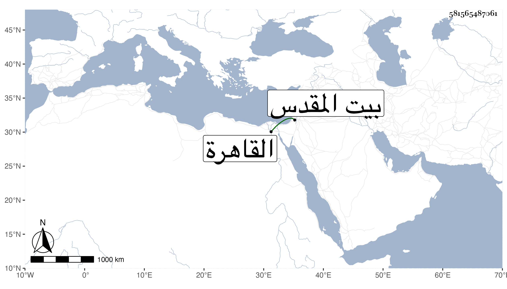

0902Sakhawi.DawLamic.ITO20230111-ara1.EIS1600.581565487061
Biography ID: 581565487061
388
محمد المحب بن حسان شقيق الذي قبله . ولد سنة خمس عشرة وثمانمائة ببيت المقدس ومات أبوه وهو صغير فنشأ وحفظ القرآن وسمع به على ابن الجزري ما سبق في أخيه وحضر بعض الدروس ، وقدم مع أخيه القاهرة واستجاز له المجد إسماعيل البرماوي والشهاب الواسطي والمحب بن نصر الله والكلوتاتي والمقريزي وشيخنا بل سمع عليه أشياء وعلى البدر حسين البوصيري الأدب للبخاري وثلاثة مجالس من آخر سنن الدارقطني من عشرة بقراءة شيخنا ابن خضر ووصفه بالشيخ الفاضل في آخرين ، وكذا وصفه الزين رضوان بالفاضل ، وتنزل في الجهات كسعيد السعداء وكان شاهد الشونة بها . وحج غير مرة وجاور وآخر ما كان هناك في سنة ثمان وتسعين جاور بها وتردد إلي واستجيز ثم رجع مع الركب مع سكون ولين وسلامة فطرة واحتمال وفتوة وتواضع . وقد كبر وهش وسمع منه الطلبة بل حدث رفيقا للسنباطي بالأدب المفرد .
